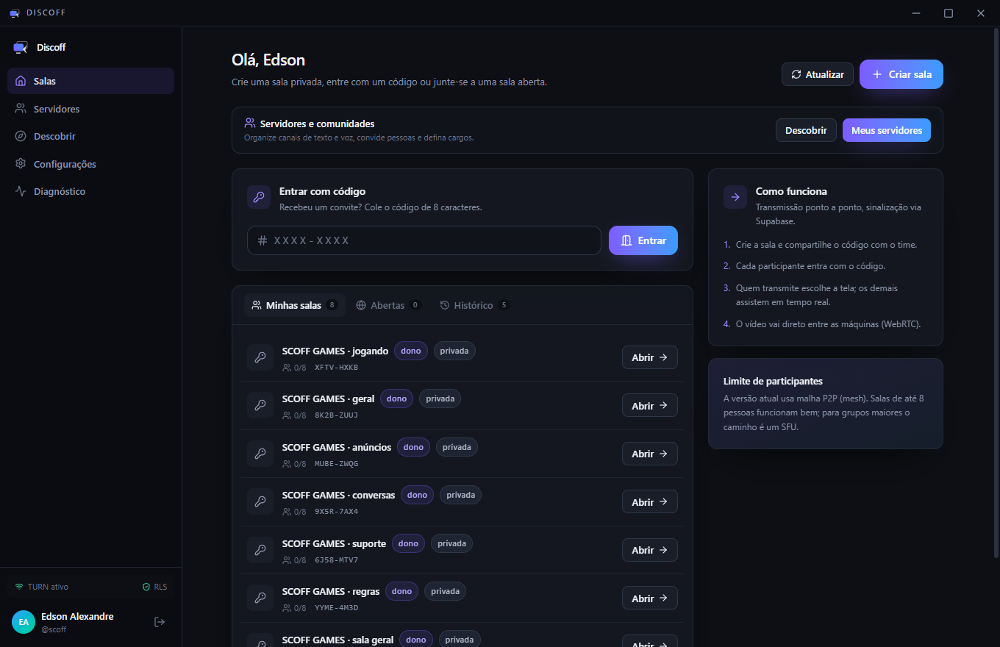
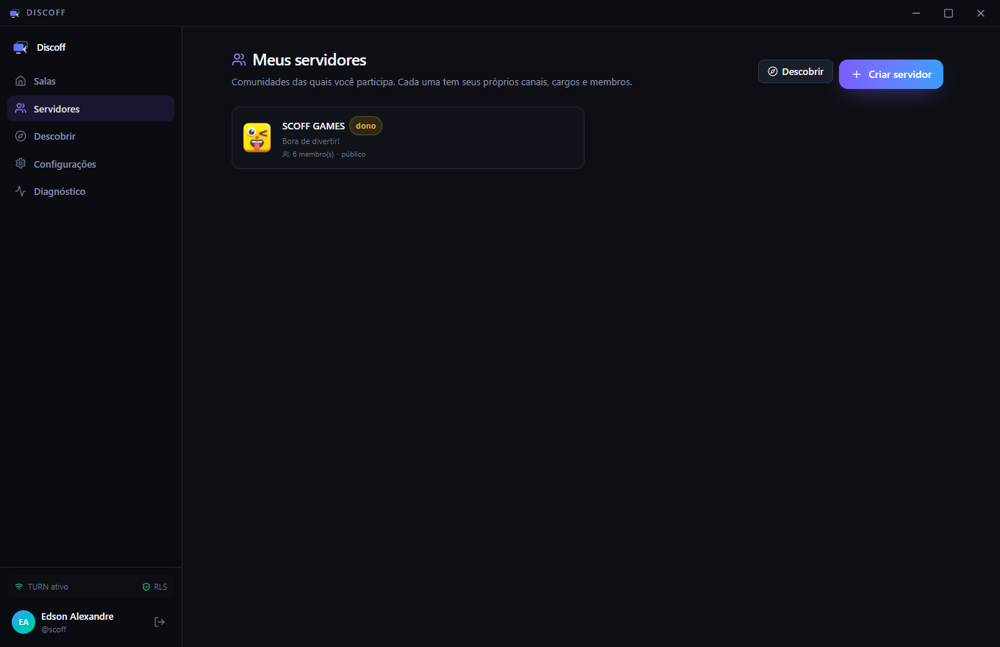
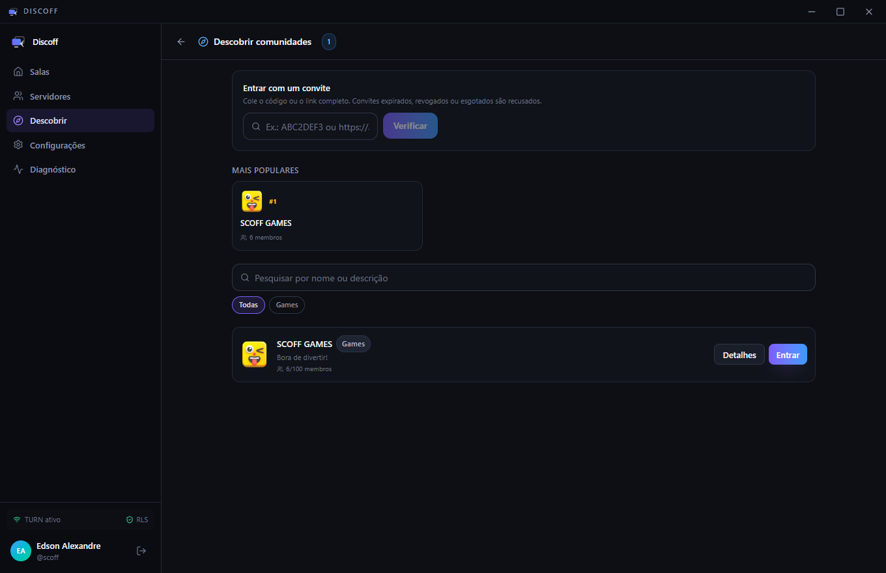
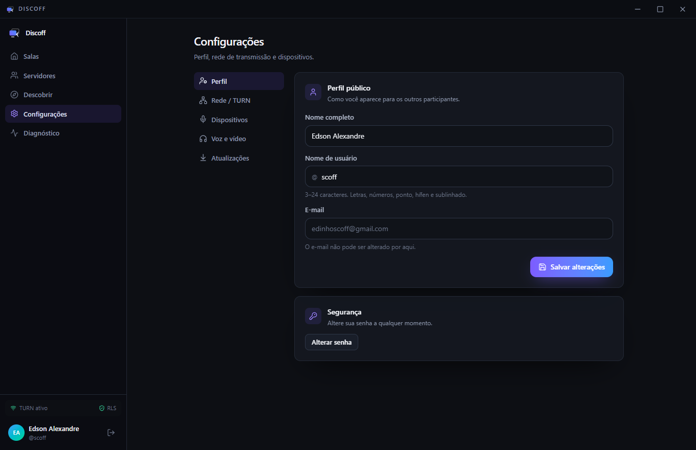
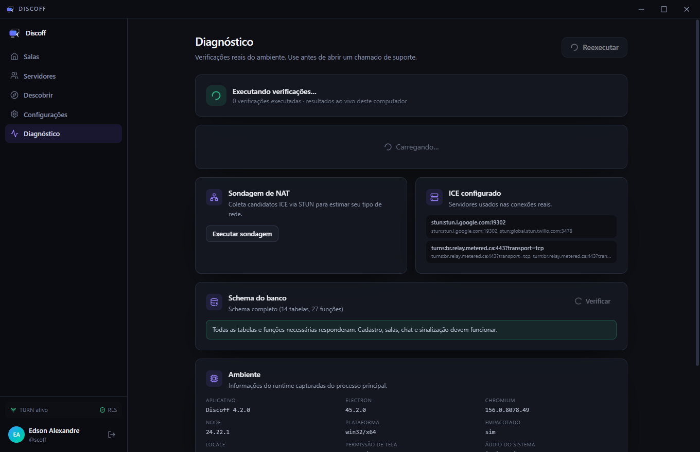

Tela em alta definição
Até 1080p a 60 quadros por segundo. Você escolhe a qualidade e pode mudar no meio da transmissão, sem derrubar a chamada.
Windows e Android · versão 4.4.0
Compartilhe a tela com o áudio do sistema, converse por voz e assuma o controle do outro computador. A transmissão vai direto de uma máquina para a outra — sem passar por servidor no meio.
Gratuito · 125 MB · código-fonte aberto

Recursos
Não é só espelhar a tela. É poder mostrar, explicar, ouvir e — quando precisar — resolver com as próprias mãos.
Até 1080p a 60 quadros por segundo. Você escolhe a qualidade e pode mudar no meio da transmissão, sem derrubar a chamada.
O som que sai do computador vai junto com a imagem. Vídeo, jogo ou música — quem assiste escuta, sem precisar de outra chamada.
Fale enquanto mostra a tela. Com cancelamento de eco e de ruído, para o áudio do jogo não virar microfonia.
Mouse e teclado do outro computador, com autorização de quem está transmitindo. Para ajudar de verdade, não só descrever onde clicar.
Para mandar um link, um código ou aquela instrução que não cabe na pressa. Fica registrado na sala.
Organize tudo em servidores, com canais de voz e de texto. Cada canal é uma sala própria, com permissões separadas.
Por dentro
Estas são capturas reais do programa instalado, não montagens.




Como funciona
Instale no Windows, crie sua conta e pronto. No Android, o mesmo aplicativo, para acompanhar de onde estiver.
Compartilhe o código da sala. Quem receber entra com um clique — sem instalar nada além do app.
Escolha o monitor ou a janela, ligue o áudio do sistema e comece. O controle remoto fica disponível quando você permitir.
O vídeo vai direto de uma máquina para a outra, criptografado de ponta a ponta pelo próprio WebRTC. O servidor só apresenta as duas pontas — não vê o que você mostra. Quando a rede não permite conexão direta (4G, Wi-Fi corporativo), entra um retransmissor que também não consegue abrir o conteúdo.
Baixe, instale e comece a compartilhar em menos de um minuto.
Versão 4.4.0 · o Windows pode pedir confirmação ao abrir o instalador, porque ele não tem assinatura paga. Se preferir, baixe a versão portátil, que não instala nada.
Dúvidas
Não. O Discoff é gratuito, sem limite de tempo de chamada e sem marca d'água na transmissão.
Até 8 pessoas. A transmissão é feita direto entre as máquinas, então cada participante a mais consome mais da sua internet. Para transmissões grandes, o ideal é um servidor dedicado — e aí outro tipo de produto resolve melhor.
Só se você permitir. O controle remoto é concedido por você, na hora, e pode ser revogado a qualquer momento. Sem a sua autorização, quem assiste apenas vê.
Sim, com ajustes. O app reduz a qualidade sozinho quando a rede cai e volta a subir quando melhora. Em conexões muito instáveis (4G fraco), ele usa um servidor de retransmissão para manter a chamada de pé.
É. O aviso aparece porque o instalador não tem certificado de assinatura comercial, que é pago. O código-fonte é aberto e está disponível para conferência. Você pode clicar em "Mais informações" e depois em "Executar assim mesmo".
Sim. O app mudou de nome para Discoff, e a atualização automática de versões antigas não consegue concluir sozinha. Desinstale o ScreenConnect antes de instalar esta versão. Sua conta continua funcionando: os dados ficam guardados e são reaproveitados.
Só o necessário para a conta: e-mail, nome de perfil e as salas que você criar. O vídeo e o áudio não são gravados nem passam por servidor nosso.